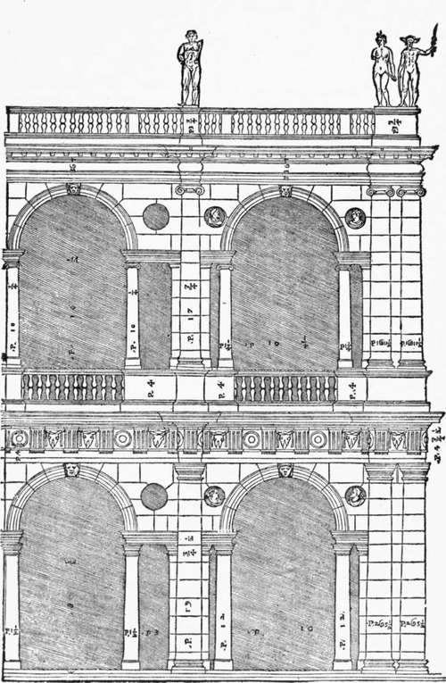
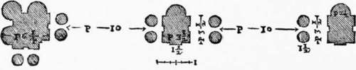
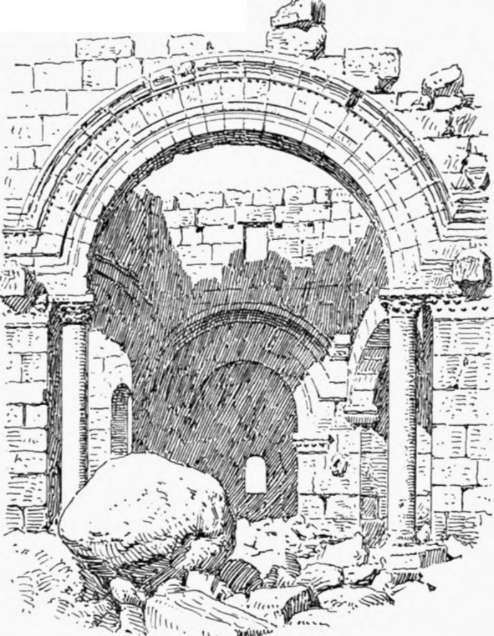

Palace Architecture Of The Roman Renaissance. Part 5
Description
This section is from the book "Character Of Renaissance Architecture", by Charles Herbert Moore. Also available from Amazon: Character of Renaissance Architecture.
Palace Architecture Of The Roman Renaissance. Part 5
Of the secular architecture of Vignola the Palazzo Caprarola, in the hill country between Rome and Viterbo, is the most important. This building, says Milizia, " is without doubt the grandest and the most beautiful work of this great artist."1 The building, which is illustrated by elaborate drawings in Vignola's own book, has in plan the form of a regular pentagon enclosing a circular court. The form is, of course, given from pure caprice, and imposes needless difficulties, as if with the sole purpose of ingeniously solving them. The basement, with a salient fortress-like bastion on each angle, is in two stages, of which the lower one has a batter wall. Over this are the principal story of the state apartments, and two other stories containing upward of eighty sleeping chambers. Slightly projecting bays are formed on the angles, as in the Cancelleria at Rome, and each facade is divided into two stages by superimposed orders of pilasters on high pedestals. The projecting bays have rusticated quoins instead of pilasters, and the wall of the first story of each of these bays is rusticated. An open loggia with five arches in the intervals of the order, and one enclosed arch at each^end, reaches across the main front of the principal story between the salient bays, and the main portal is an arched opening, with rusticated jambs in relief and an entablature, in the upper stage of the basement. This portal is reached by a double ramp mounting an outer terrace and the lower basement stage. Below this, giving access to the lower basement, is a rusticated portico with an order of rusticated pilasters and three open arches flanked by two narrow enclosed bays with niches, and crowned with a balustrade.
The circular court has an open arcade of widely spaced arches in two stages, of which the lower one has a plain rusticated wall, and the upper one an Ionic order with columns in pairs, and a balustrade with statues crowning the entablature. This sumptuous monument was a source of inspiration to the later architects of the transalpine Renaissance, and De l'Orme's oval courts of the Tuileries, and the circular courts of the palace of Whitehall by Inigo Jones, suggest its influence.
1 Memorie, etc., vol. 2, p. 34.
But in domestic and civic architecture Palladio was more prolific than Vignola, and his work has had a correspondingly wider influence. Among the earlier civic buildings by him is the well-known portico of the town hall of his native city, Vicenza. This portico of two stories covers three sides of a building of oblong rectangular plan, dating from the Middle Ages, and consisting of a great hall over a low basement. Palladio's scheme (Fig. 72) for this portico is plainly derived from the town hall of Padua to which he refers in his book as a most notable edifice.1 But while basing his design on that of Padua, he modifies it by features drawn from other sources. In place of the simple arcades of the mediaeval Paduan model, he has substituted a complicated combination of arches with large and small orders, in which the inspiration of Sanso-vino's Library of St. Mark in Venice is apparent. The freestanding column under the archivolt of Sansovino's upper story (Fig. 65, p. 120) is reproduced by Palladio in both stories of the portico of Vicenza. But instead of a single column, he has inserted a pair on each side of the arch, ranged in the direction of the thickness of the wall, as shown in the plan (Fig. 73).
Fig. 72. — Part of the Portico of Vicenza, from Palladio's book.
Fig. 73.
The intervals between the columns of the great orders are very wide, because they had to conform with the spacing of the openings in the mediaeval structure enclosed; but the arches within the intervals are necessarily of narrower span, since their crowns could not rise above the soffit of the entablature. Thus the free-standing columns of the small order which support these arches are set farther away from the pier than they are in Sansovino's scheme. This free-standing column supporting the archivolt is often spoken of as an innovation of Sansovino and Palladio. It is worthy of notice, however, that instances of it occur in the Graeco-Roman architecture of Syria, as in S. Simeon Stylites (Fig. 74); but the arch in these cases is not framed in with the useless order. In the ground story arcade of Padua the spandrels have circular perforations, and these are reproduced by Palladio in both stories of his portico.
Fig. 74. — Arch of St. Simeon Stylites.
1 I Qualtro Libri deW Architettura, bk. 3, p. 41.
Continue to:
- prev: Palace Architecture Of The Roman Renaissance. Part 4
- Table of Contents
- next: Palace Architecture Of The Roman Renaissance. Part 6